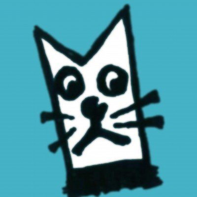
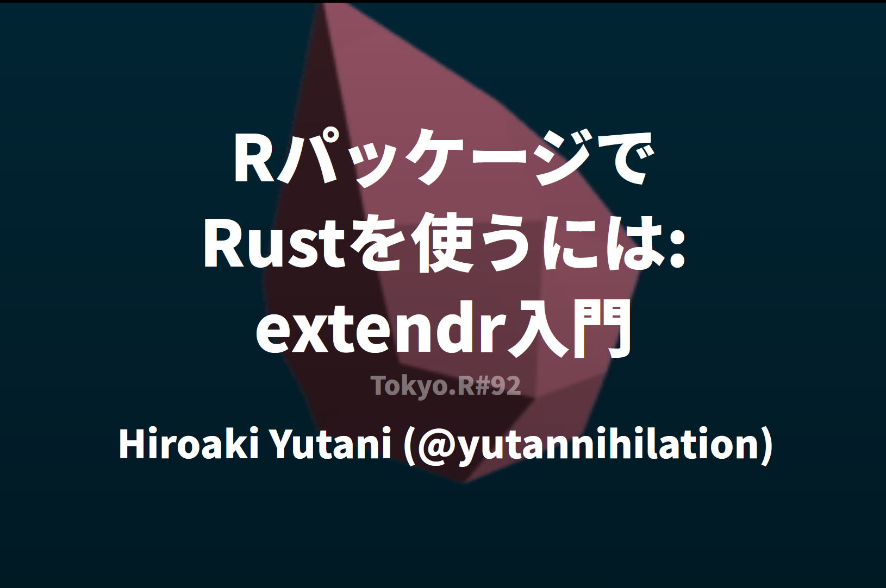

Rust と WebGPU で
R のグラフィックデバイスをつくる
Hiroaki Yutani
ドーモ！
グラフィックデバイスとは？
グラフィックデバイスとは？
Rでは、標準ライブラリでグラフィックス関連の機能も提供されている。具体的には、
データを渡せばいい感じにグラフを描いてくれる高レベルな関数（例：
plot()）高レベルな関数の下で動いている、「線を描く」「四角を描く」みたいな低レベルな関数（例：
grid.lines()）
後者の低レベルな関数の命令を実際に描画するのがグラフィックデバイス

グラフィックデバイスの例
ざっくり言えば、グラフィックデバイスを変えることで、PNG として出力したり、SVG として出力したり、いろいろ形式を変えられる
グラフィックデバイスはつくれる
低レベルな関数は、Graphics Device APIを通じてグラフィックデバイスに描画命令を伝える。
つまり、Graphics Device APIを実装すればグラフィックデバイスがつくれる。例えば、以下のような変なデバイスも作れる。
描画命令に応じてペンプロッターが動く
描画命令を音に変換する
描画命令をすべて無視してなにもしない（これは実際に存在する）
Graphics Device APIの例
| API | 説明 |
|---|---|
circle() |
円を描く |
rect() |
四角を描く |
line() |
線を描く |
text() , textUTF8() |
テキストを描く |
metricInfo() |
テキストの幅と高さを返す |
clip() |
描画範囲を設定する |
activate(), deactivate(), close() |
デバイスが開かれた時や閉じられた時のフック |
WebGPU とは？
WebGPU 1 とは？
GPU を使ってレンダリングや計算などの処理をするためのAPI。
「Web」とついているところから察せられるように、ウェブブラウザでの利用が想定されている。Chrome や Firefox にもすでに入っている（デフォルトでは無効）
ただし、ウェブ用に設計されたからといってウェブ専用の API ではない2（重要）
なぜ WebGPU が必要なの？
- GPU を使うためのグラフィックス API はすでに様々あるが、プラットフォームごとに使える API が違い、それぞれに対応しようと思うと実装コストが大変なので、抽象化されたレイヤーが必要
Windows: Direct3D 12, Direct3D 11, Vulkan
macOS: Metal, MoltenVK (Vulkan)
Linux: Vulkan
- あと、ウェブブラウザで実行するという視点から、セキュリティや安定性を脅かすようなことはできないようにする必要がある
イメージ図

Vulkan でよくない？
Vulkan ではポータビリティが足りない（古いデバイスや macOS / iOS）
セキュリティや安定性
（個人的な感想）Vulkan のコードはめちゃくちゃ長くなりがちでつらい
（あとは政治的な理由もありそう）
WebGL / OpenGL でよくない？
たしかに、GL 系はポータビリティの観点では優れている（実際、OpenGL ES は WebGPU 実装のバックエンドにも入っていたりする）
しかし、GL 系はさまざまな負債を背負っており、最近のアーキテクチャに使うにはオーバーヘッドや制限が大きい1、らしい
（あとは政治的な理由もありそう）
WebGPU の主な実装
Dawn (C++)
- Google 陣営
wgpu (Rust)
- Mozilla 陣営
wgpu
参考）wgpu を学ぶには
Learn Wgpu: https://sotrh.github.io/learn-wgpu/
なぜ WebGPU で R のグラフィックデバイスをつくりたいのか？
おもしろポストエフェクトをかけたりして shader 芸で遊びたい
グラフィックデバイスの実装に OS 間で差があり、Windows で使えるいい感じのインタラクティブなグラフィックデバイスがない
ところで…
Rust でグラフィックデバイスをつくったとして、
どうやって R から Rust にアクセスするの？
どうやって Rust から R にアクセスするの？
Rust と R
Rust と R
R には C API がある
Rust には FFI がある
→ R の C API への Rust binding を rust-bindgen で生成していい感じにラップ
いい感じにラップしたやつ: extendr
2020 年ごろから？開発
Rust ぜんぜんわからないけどなぜかメンテナの1人をやっています…
参考）extendr の使い方
イメージ図

グラフィックデバイスを実装する
GPU 上で絵を描くには？
- 描きたい図形を三角形のメッシュに変換する（tessellation）
- 描きたい図形を signed distance function (SDF) で表現する
- ラスターデータをテクスチャとして貼り付ける
Tessellation
- GPU は三角形のメッシュしか描けないので、あらかじめ CPU 側で図形を三角形に切り刻む処理
- Rust だと lyonというライブラリを使う
SDF
単純な図形ならこちらの方が負荷が少なく、実装も簡単
（簡単な図形じゃなくても、例えばテキストもSDF化してレンダリングすることもある）
参考）よくあるSDF一覧
ラスターデータをテクスチャとして貼り付ける
ラスタデータはこうする必要がある（今回は未実装）
テキストも一度ラスタ化してから貼り付けることもある
今回の実装
| API | 実装方式 | 理由 |
|---|---|---|
line() |
tessellation | |
circle() |
SDF | 円はプロットで最もよく使われる図形のひとつ。なるべく軽くするため |
rect() |
tessellation | |
text() |
tessellation | SDF font の実装方法がよくわからなかった |
raster() |
（未実装） | |
| … |
イメージ図

結果
動いた
おもしろシェーダー芸
色を反転
おもしろシェーダー芸
ブラウン管ディスプレイエフェクト（Babylon.js のブログ記事を元に実装）

ブラウン管ディスプレイエフェクトのコード（WGSL）
let CURVATURE: vec2<f32> = vec2<f32>(3.0, 3.0);
let RESOLUTION: vec2<f32> = vec2<f32>(100.0, 100.0);
let BRIGHTNESS: f32 = 4.0;
let PI: f32 = 3.14159;
fn curveRemapUV(uv_in: vec2<f32>) -> vec2<f32> {
var uv_out: vec2<f32>;
// as we near the edge of our screen apply greater distortion using a cubic function
uv_out = uv_in * 2.0 - 1.0;
var offset: vec2<f32> = abs(uv_out.yx) / CURVATURE;
uv_out = uv_out + uv_out * offset * offset;
return uv_out * 0.5 + 0.5;
}
fn scanLineIntensity(uv_in: f32, resolution: f32, opacity: f32) -> vec4<f32> {
var intensity: f32 = sin(uv_in * resolution * PI * 2.0);
intensity = ((0.5 * intensity) + 0.5) * 0.9 + 0.1;
return vec4<f32>(vec3<f32>(pow(intensity, opacity)), 1.0);
}
fn vignetteIntensity(uv_in: vec2<f32>, resolution: vec2<f32>, opacity: f32, roundness: f32) -> vec4<f32> {
var intensity: f32 = uv_in.x * uv_in.y * (1.0 - uv_in.x) * (1.0 - uv_in.y);
return vec4<f32>(vec3<f32>(clamp(pow((resolution.x / roundness) * intensity, opacity), 0.0, 1.0)), 1.0);
}
@vertex
...snip...
@fragment
fn fs_main(
vs_out: VertexOutput
) -> @location(0) vec4<f32> {
var remapped_tex_coords = curveRemapUV(vs_out.tex_coords);
var color: vec4<f32> = textureSample(r_texture, r_sampler, remapped_tex_coords);
color *= vignetteIntensity(remapped_tex_coords, RESOLUTION, 1.0, 2.0);
color *= scanLineIntensity(remapped_tex_coords.x, RESOLUTION.y, 1.0);
color *= scanLineIntensity(remapped_tex_coords.y, RESOLUTION.x, 1.0);
return vec4<f32>(color.rgb * BRIGHTNESS, 1.0);
}レポジトリ
つらかったところ、課題など
Rust が panic を起こすと R のセッションが即死してしまいログが残らない。原因究明がむずかしい。
→ R のセッションなしでも動くように設計を見直すユーザーから shader などを受け取れるようにしたいけど、bloom のように繰り返し適用するようなポストエフェクトをどう表現すればいいか閃かない
感想
- なんとなく、GPU のパワーで爆速！、と思ってたけど、二次元の画像を1枚生成するだけなら CPU の方が速かった。tessellation や GPU とデータをやりとりするためのバッファの準備など、事前のコストがけっこう大きい。（単に私の実装がしょぼいだけ、という可能性もかなりあります）
参考文献
Learn Wgpu: https://sotrh.github.io/learn-wgpu/
extendr: https://extendr.github.io/
ライセンス
- dawn のロゴは Google によって作成され、CC-4.0-BY ライセンスで公開されています（ref: https://dawn.googlesource.com/dawn/+/HEAD/docs/imgs/）
- wgpu のロゴは gfx-rs developers によって作成され、MIT ライセンスで公開されています（ref: https://github.com/gfx-rs/wgpu/blob/master/logo.png）
- extendr のロゴは extendr developers によって作成され、CC-4.0-BY-SA ライセンスで公開されています（ref: https://github.com/extendr/artwork）
{kind=link}